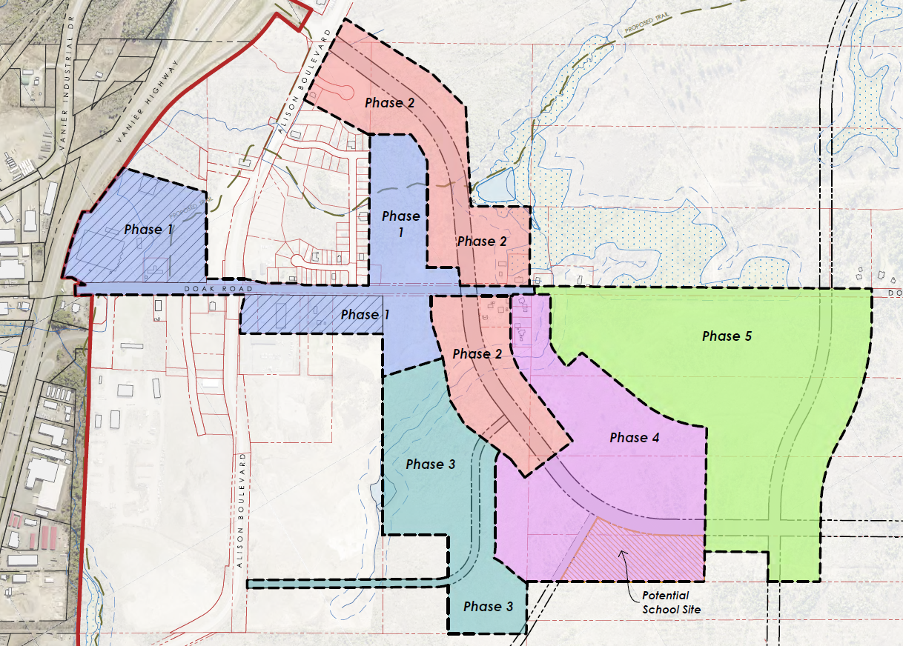

The Southeast Secondary Plan is the City of Fredericton's blueprint for a fourth growth node — a complete community of 5,000–7,000 residents on roughly 200 hectares at the city's edge.
What makes it different: the City owns 65% of the plan area overall — and 100% of Phases 1 and 2. Public ownership shifts the question from "what should we allow?" to "what should we build, in what order, and on what terms?"
This work was led by the City of Fredericton's Planning & Development team, in partnership with zzap Architecture + Planning and EXP Services. Two rounds of public engagement (March–April and August–October 2025) shaped the framework.
Our session focuses on the part most plans skip: the sequencing. The framework already decides what goes where — the workshop asks how Phases 1 and 2 actually build out at a scale, mix, and orientation that adds up to a complete community.
"Proactive, innovative, bold — with first phases that set the stage for everything that follows."
